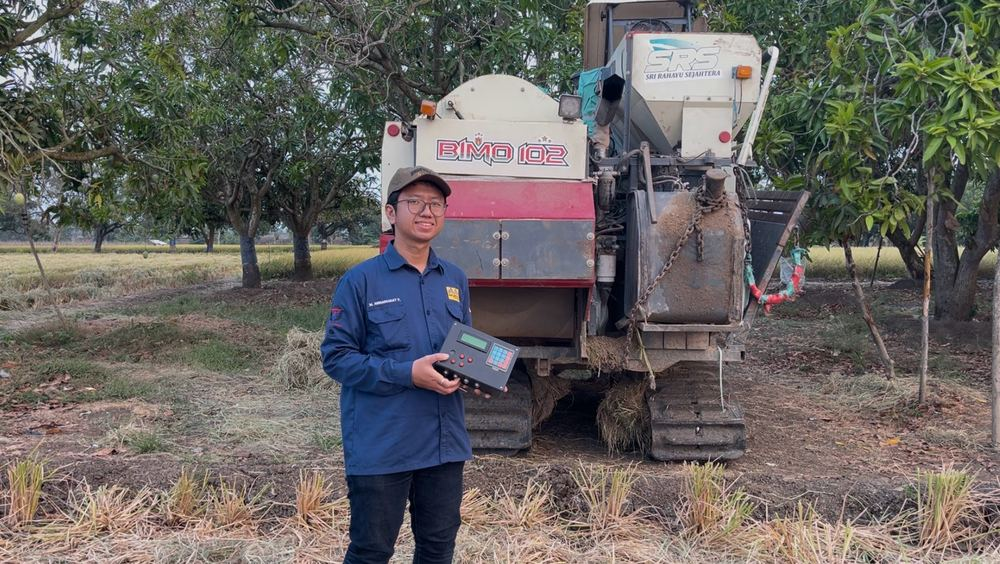

SAMS — Smart Alsintan Monitoring System

Mesin pertanian diesel milik kelompok tani jarang dipantau kondisinya, sehingga kerusakan baru ketahuan saat mesin sudah mogok di tengah musim tanam.
Diesel farm machinery owned by farmer groups is rarely condition-monitored, so failures are only discovered when the machine breaks down mid-season.
Modul retrofit non-invasif (tanpa menyentuh ECU) berbasis ESP32, dengan node sensor modular via UART, HMI LCD + keypad, machine profile per jenis mesin, dan installation wizard untuk teknisi.
A non-invasive retrofit module (no ECU access) built on ESP32, with modular sensor nodes over UART, an LCD + keypad HMI, per-machine profiles, and an installation wizard for technicians.
Prototipe diuji lapangan pada 4 mesin (combine harvester, traktor roda 2, traktor roda 4, genset). Memantau RPM, BBM, tegangan aki, jam operasi, dan kehadiran operator, dengan monitoring jarak jauh via IoT.
Prototype field-tested on 4 machines (combine harvester, 2-wheel and 4-wheel tractors, genset). Monitors RPM, fuel, battery voltage, operating hours, and operator presence, with remote IoT monitoring.